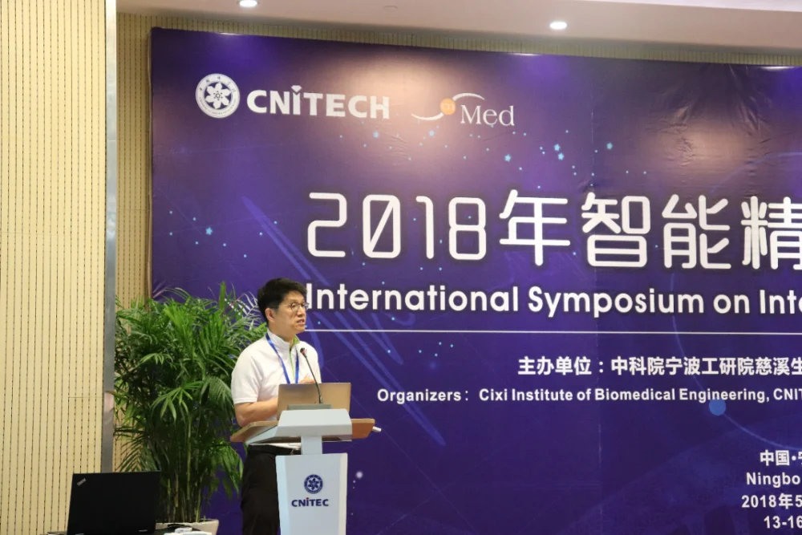
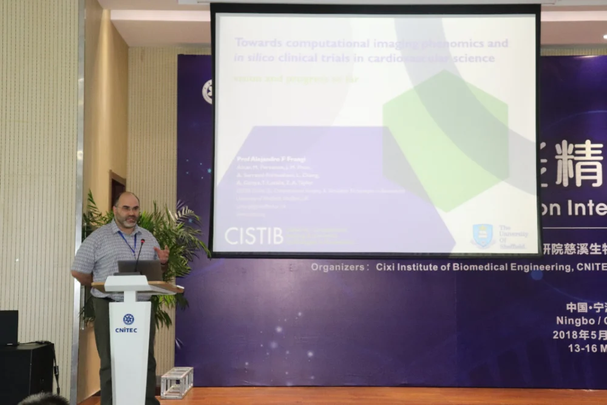
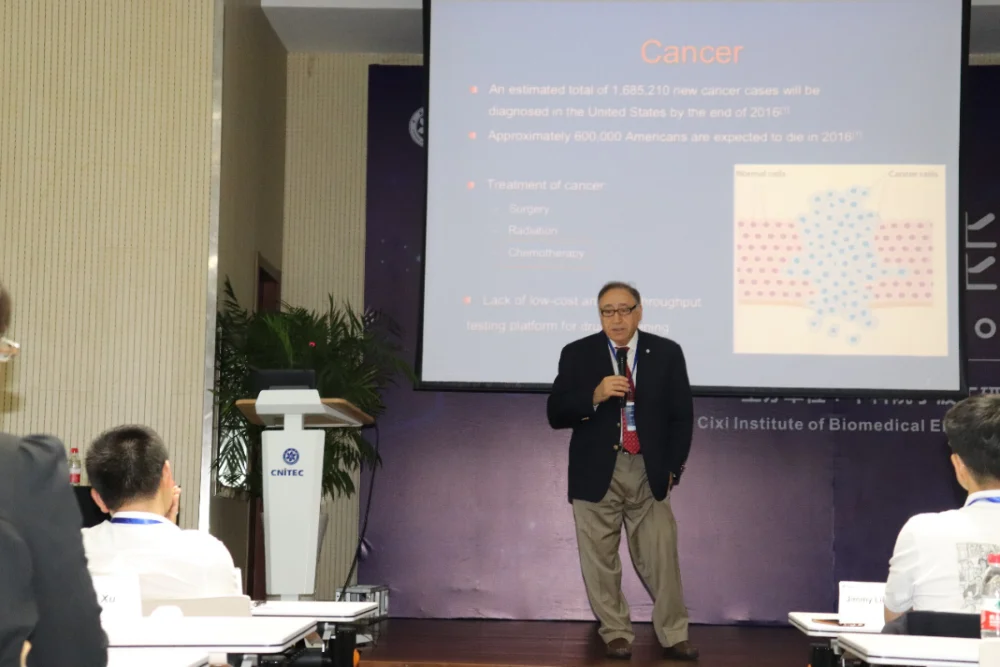
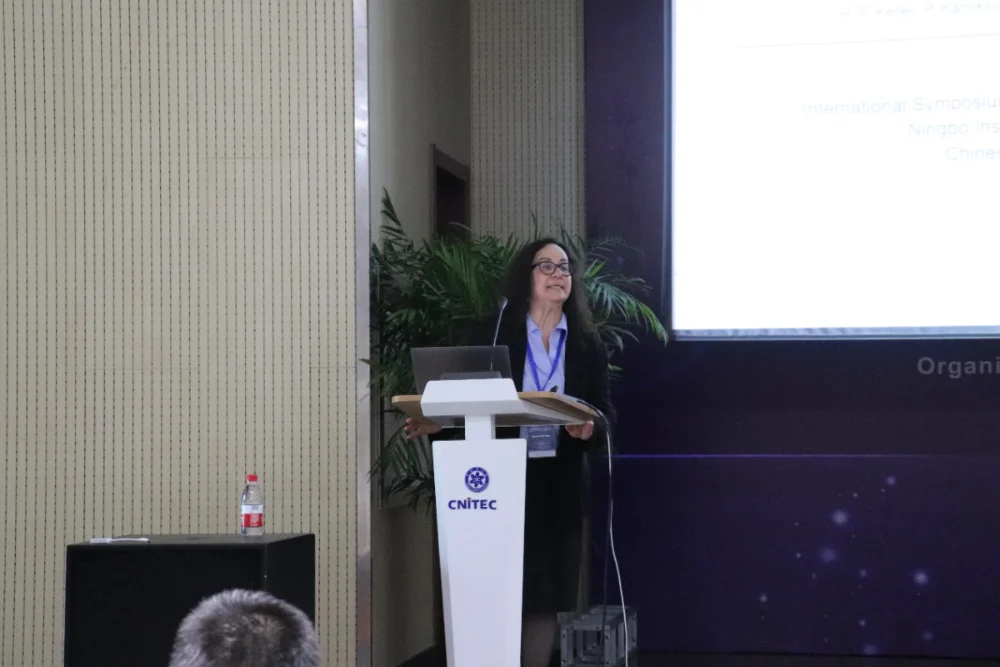
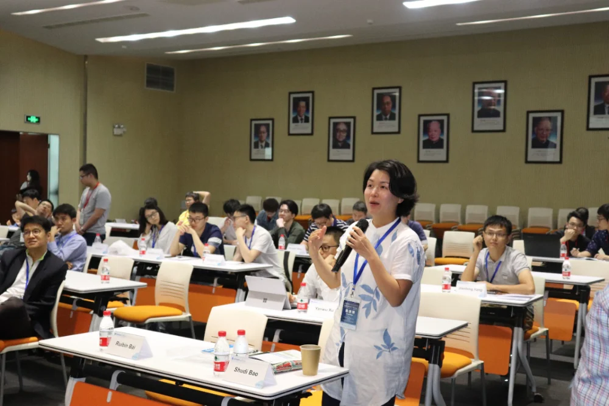
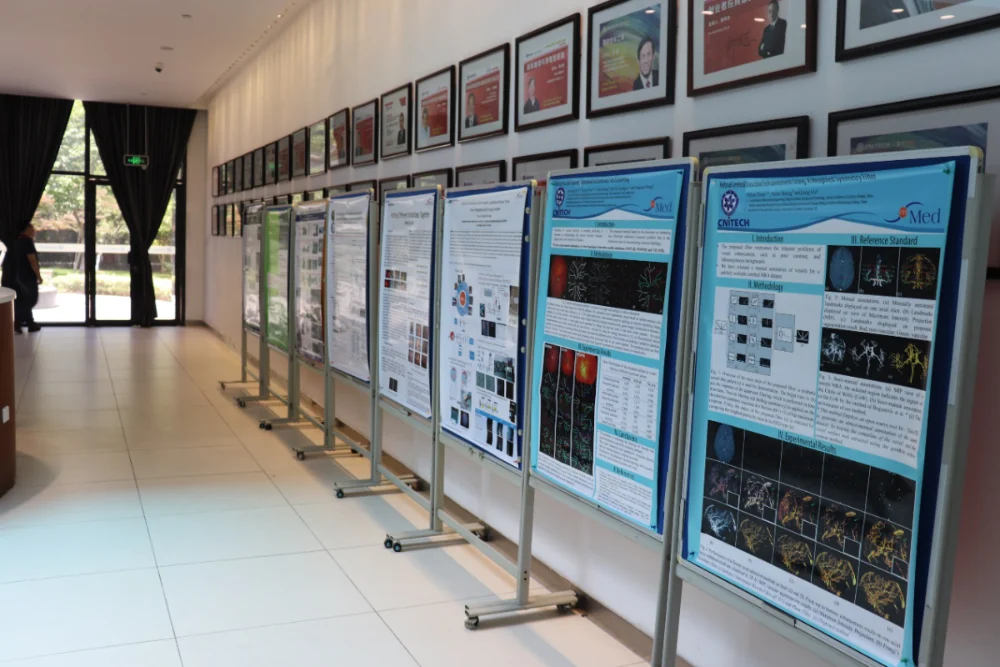
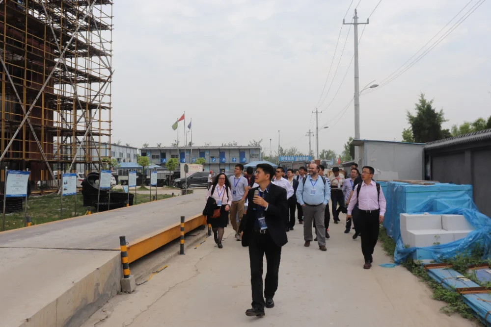
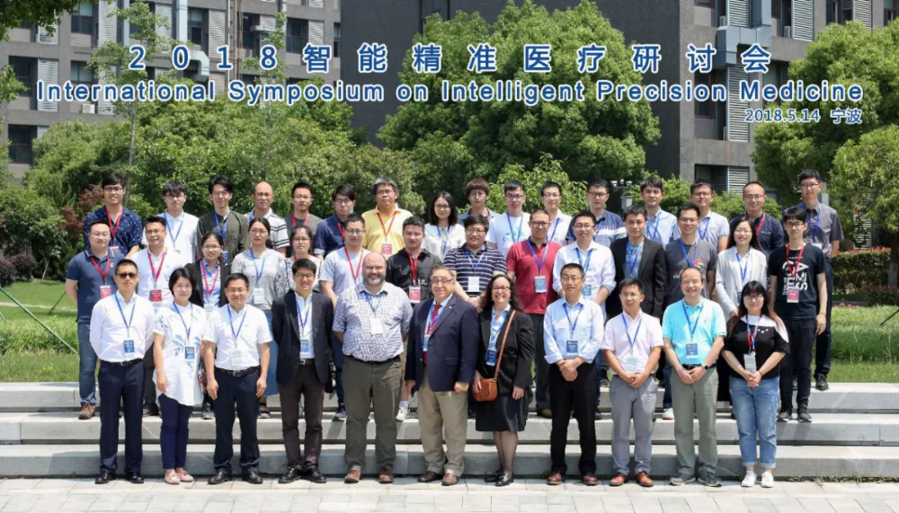

2018年5月13日-5月16日，由中科院宁波宁波工研院慈溪医工所和慈溪市委组织部联合主办首届国际“智能精准医疗”学术研讨会。研讨会分为四大主题讨论方向分别为：人工智能、精准医疗、眼脑联动、手术机器人。会议本着小而精，专而实的办会思想。有来自全球世界各地40余位专家参与了这次盛会，并充分讨论了相关领域合作和协同创新。
本次会议特邀多位世界生物医学工程领域的知名专家包括有多位IEEE Fellow、多位国家及浙江省权威专家、医疗图像处理领域国际顶级期刊主编、顶级会议主席莅临现场并发表主题演讲。
14日，会议在中科院宁波材料所博思会堂隆重召开，40余位杰出的海内外生物医学工程相关领域的专家学者相聚于此，深入探讨人工智能技术如何推动精准医疗和健康产业的发展。美国电子电器工程师协会院士（IEEE Felow）Alex Frangi、美国电子电器工程师协会院士（IEEE Felow）Metin Akay、 Guoliang Li、Shenghua Gao、Lixin Duan,、美国弗吉尼亚理工大学Guohua Cao教授、新加坡科研局Huazhu Fu研究员、北京航空航天大学Annan Li教授等学者对他们的相关工作进行了相应的介绍，并讨论了与医工所之间的合作。
15日，会议召开地点设在了美丽来的慈溪，参会学者们首先参观了慈溪医工所新址，了解了慈溪医工所工程建设及科研进展，随后去到了上林英才创业园继续召开研讨会。慈溪市委常委、组织部部长周培剑致辞并参加会议，随后温州医科大学眼视光学院副院长陈浩教授，点内(上海)生物科技有限公司CTO徐梦迪等做了精彩的演讲，最后慈溪医工所所长刘江做了大会报告及总结。
16-17日，美国电子电器工程师协会院士（IEEE Felow）Alex Frangi教授在IMED课题组与组内研究生员工及研究员做了充分的交流，碰撞出学术思想的火花。
本次会议深入探讨了人工智能技术在医疗健康科研及产业中的应用，促进了学科间交流合作和学术创新，推动了优质项目和高端人才的引进，精准服务慈溪医疗器械产业。通过高水平人才的交流互动，力争推动将慈溪医工所建成为中国乃至世界上独具特色的高水平研究机构。

刘江教授主持会议

Alex Frangi教授的报告

Metin Akay教授的报告

Yasemin M. Akay教授的报告

会议交流

会议海报展览

Jimmy Liu客串“导游”来为参会人员介绍建设中的医工所

与会专家学者合影留念